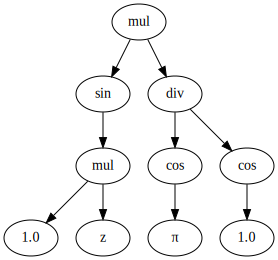

java.lang.Object
io.jenetics.ext.util.TreeFormatter
Definition of different tree formatter strategies.
- Since:
- 5.0
- Version:
- 5.0
-
Field Summary
FieldsModifier and TypeFieldDescriptionstatic final TreeFormatterA tree formatter for .dot string representations.static final TreeFormatterFormats a given tree to a lisp string representation.static final TreeFormatterFormats a given tree to a parentheses string representation.static final TreeFormatterFormats a given tree to a tree string representation. -
Constructor Summary
Constructors -
Method Summary
Modifier and TypeMethodDescriptionstatic TreeFormatterA tree formatter for .dot string representations.Formats the giventreeto its string representation.abstract <V> Stringformat(Tree<V, ?> tree, Function<? super V, ? extends CharSequence> mapper) Formats the giventreeto its string representation.
-
Field Details
-
TREE
Formats a given tree to a tree string representation.mul ├── div │ ├── cos │ │ └── 1.0 │ └── cos │ └── π └── sin └── mul ├── 1.0 └── z -
PARENTHESES
Formats a given tree to a parentheses string representation.mul(div(cos(1.0),cos(π)),sin(mul(1.0,z))) -
LISP
Formats a given tree to a lisp string representation.(mul (div (cos 1.0) (cos π)) (sin (mul 1.0 z))) -
DOT
A tree formatter for .dot string representations. This strings can be used to create nice looking tree images. The treemul(div(cos(1.0),cos(π)),sin(mul(1.0,z)))is rendered into this dot stringdigraph Tree { node_001 [label="div"]; node_002 [label="cos"]; node_003 [label="1.0"]; node_004 [label="cos"]; node_000 [label="mul"]; node_009 [label="z"]; node_005 [label="π"]; node_006 [label="sin"]; node_007 [label="mul"]; node_008 [label="1.0"]; node_000 -> node_001; node_001 -> node_002; node_002 -> node_003; node_001 -> node_004; node_004 -> node_005; node_000 -> node_006; node_006 -> node_007; node_007 -> node_008; node_007 -> node_009; }This dot string can be rendered into the following graph:
-
-
Constructor Details
-
TreeFormatter
protected TreeFormatter()
-
-
Method Details
-
format
public abstract <V> String format(Tree<V, ?> tree, Function<? super V, ? extends CharSequence> mapper) Formats the giventreeto its string representation. The givenmapperis used for converting the node typeVto a string value.- Type Parameters:
V- the tree node type- Parameters:
tree- the input tree to formatmapper- the tree node value mapper- Returns:
- the string representation of the given
tree - Throws:
NullPointerException- if one of the arguments isnull
-
format
Formats the giventreeto its string representation.- Parameters:
tree- the input tree to format- Returns:
- the string representation of the given
tree - Throws:
NullPointerException- if thetreeisnull
-
dot
A tree formatter for .dot string representations. This strings can be used to create nice looking tree images. The treemul(div(cos(1.0),cos(π)),sin(mul(1.0,z)))is rendered into this dot stringdigraph Tree { node_001 [label="div"]; node_002 [label="cos"]; node_003 [label="1.0"]; node_004 [label="cos"]; node_000 [label="mul"]; node_009 [label="z"]; node_005 [label="π"]; node_006 [label="sin"]; node_007 [label="mul"]; node_008 [label="1.0"]; node_000 -> node_001; node_001 -> node_002; node_002 -> node_003; node_001 -> node_004; node_004 -> node_005; node_000 -> node_006; node_006 -> node_007; node_007 -> node_008; node_007 -> node_009; }This dot string can be rendered into the following graph:- Parameters:
treeName- the name of the digraph- Returns:
- a dot string formatter
- Throws:
NullPointerException- if the given tree name isnull
-